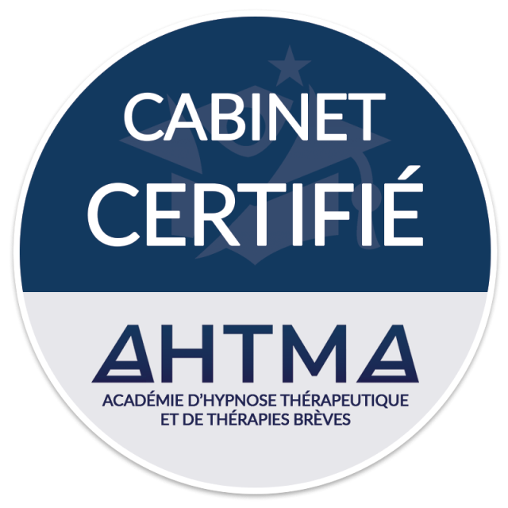

À propos
Mon parcours
Élève de l'AHTMA à Vannes en 2019, je me suis formé avec passion à l'hypnose éricksonienne puis à l'EMDR-DSA. Depuis 2021, je suis pleinement investi dans l'accompagnement de mes patients vers un mieux-être durable et personnalisé.
Grâce aux séances d'hypnose éricksonienne ou d'EMDR-DSA, nous travaillons ensemble sur votre développement personnel, la gestion du stress, la diminution de l'anxiété, le renforcement de la confiance en soi, le soulagement des troubles liés au stress post-traumatique, les problèmes de sommeil ou les addictions.
Vous pouvez me consulter à Concarneau ou à Rosporden, ou simplement me contacter pour échanger sur votre situation et savoir si cet accompagnement peut vous convenir.
Hypnose éricksonienne
Formation suivie à l'AHTMA (Vannes), une approche douce qui s'appuie sur les ressources propres de chaque personne.
EMDR-DSA
Spécialisation dans le traitement des traumatismes par stimulation bilatérale, une méthode reconnue.
Approche inspirée de la sophrologie
Certaines inductions s'inspirent de techniques sophrologiques pour la détente psychocorporelle, en complément de l'hypnose éricksonienne.
